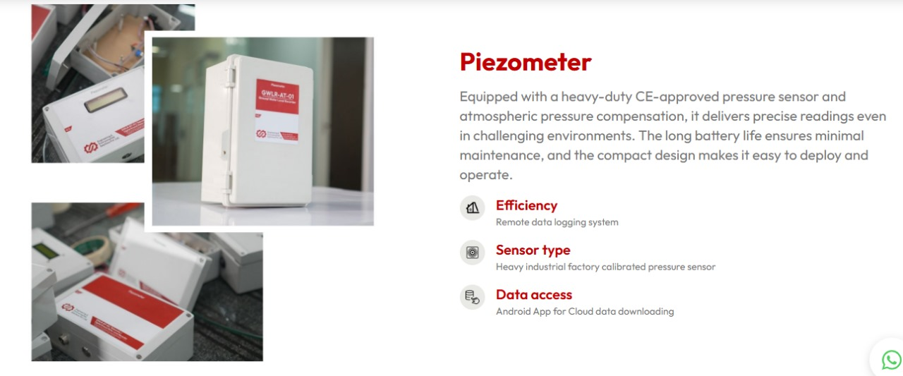

Piezometer
A reliable and affordable instrument for accurate groundwater level measurement. Equipped with a heavy-duty CE-approved pressure sensor and atmospheric pressure compensation, it delivers precise readings even in challenging environments. The long battery life ensures minimal maintenance, and the compact design makes it easy to deploy and operate.
Key Features
- Absolute piezoelectric pressure sensor
- Measures groundwater level
- 4G/LTE based remote monitoring
- Emergency alerts & dashboard support
- Atmospheric pressure compensation
- Underground water temperature monitoring & logging
- Remote data logging system
- Short circuit & reverse polarity protection
- Heavy industrial factory calibrated pressure sensor
- Corrosion-proof housing for sensors
- User programmable data storage intervals
- Wide operating range
- Compact design for easy handling
- Android app for cloud data download
Key Benefits of E&E Products
E&E Products deliver eco-friendly solutions that reduce emissions, improve energy efficiency, and minimize waste. Designed for sustainability, our products help create cleaner air, safer water, and a healthier planet. Embrace green manufacturing with E&E.
- Industry-leading sensor technology: Accurate, real-time data
- Powerful software platform: Actionable insights & seamless integration
